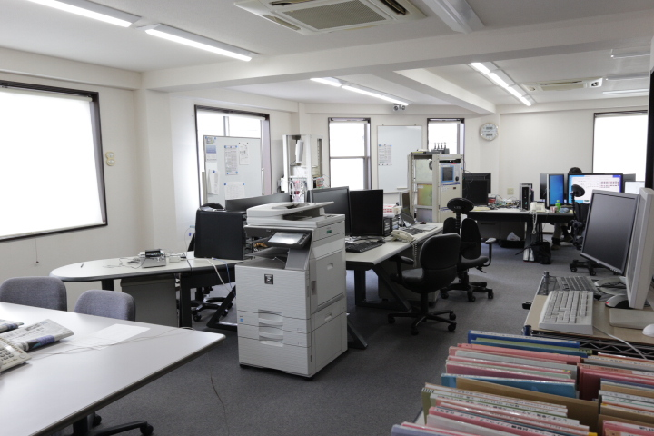
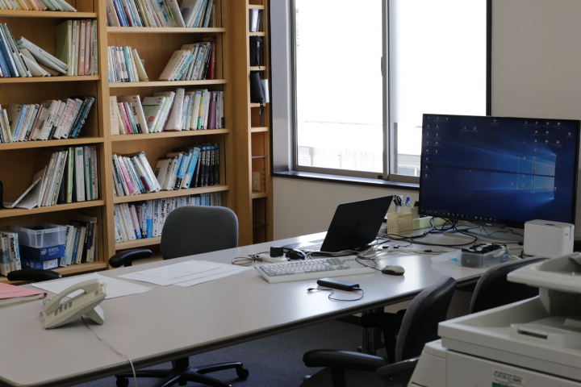
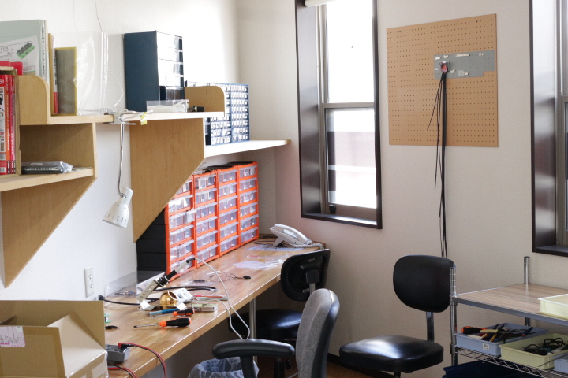

Company Profile
会社概要
| 商号 | 株式会社 安理技研 |
|---|---|
| 設立 |
1986年12月8日 (有限会社として発足) 1990年6月15日 (株式会社へ組織変更) |
| 事業内容 | コンピュータソフトウェアの開発 |
| 資本金 | 1000万円 |
| 主要取引先 | 飯能信用金庫 所沢けやき台支店 |
| 従業員数 | 4名 |
| 役員構成 |
代表取締役 宮路 俊 取締役 宮路 尚一 |
| 所在地 | 〒359-1113 埼玉県所沢市喜多町4-6 |
| 電話 | 042-920-1885 |
| FAX | 042-920-1886 |
| 会社HP | http://www.anri-net.co.jp |
History
沿革と歴史
| 1982年7月 | 個人経営として創業 |
|---|---|
| 1986年12月8日 | 資本金200万円で有限会社 安理技研を設立 |
| 1987年4月27日 | 資本金を470万円に増資 |
| 1988年1月13日 | 事業拡大のため本社移転 |
| 1989年3月30日 | 資本金を1000万円に増資 |
| 1990年6月15日 | 株式会社に組織変更 |
| 1990年10月16日 | 事業拡大のため本社移転 |
| 2005年2月8日 | 本社移転、現社屋（所沢市喜多町）完成 |
| 2010年12月8日 | 第2創業元年として再出発 |
| 2017年4月 | 汎用制御ボードSUI-01 発売 |
Office
オフィス紹介

外観
埼玉県所沢市にある自社社屋です。航空公園駅から徒歩2分の好立地に位置しています。

2F 開発室
ソフトウェア・ファームウェアの設計開発を行うメインフロアです。

2F 会議スペース
お客様との打ち合わせや社内ミーティングに使用するスペースです。

1F 工作室
ハードウェアの組み立てや動作検証を行うスタジオです。
※エレベーター、車椅子用お手洗い完備です。バリアフリーに対応した環境を整えております。